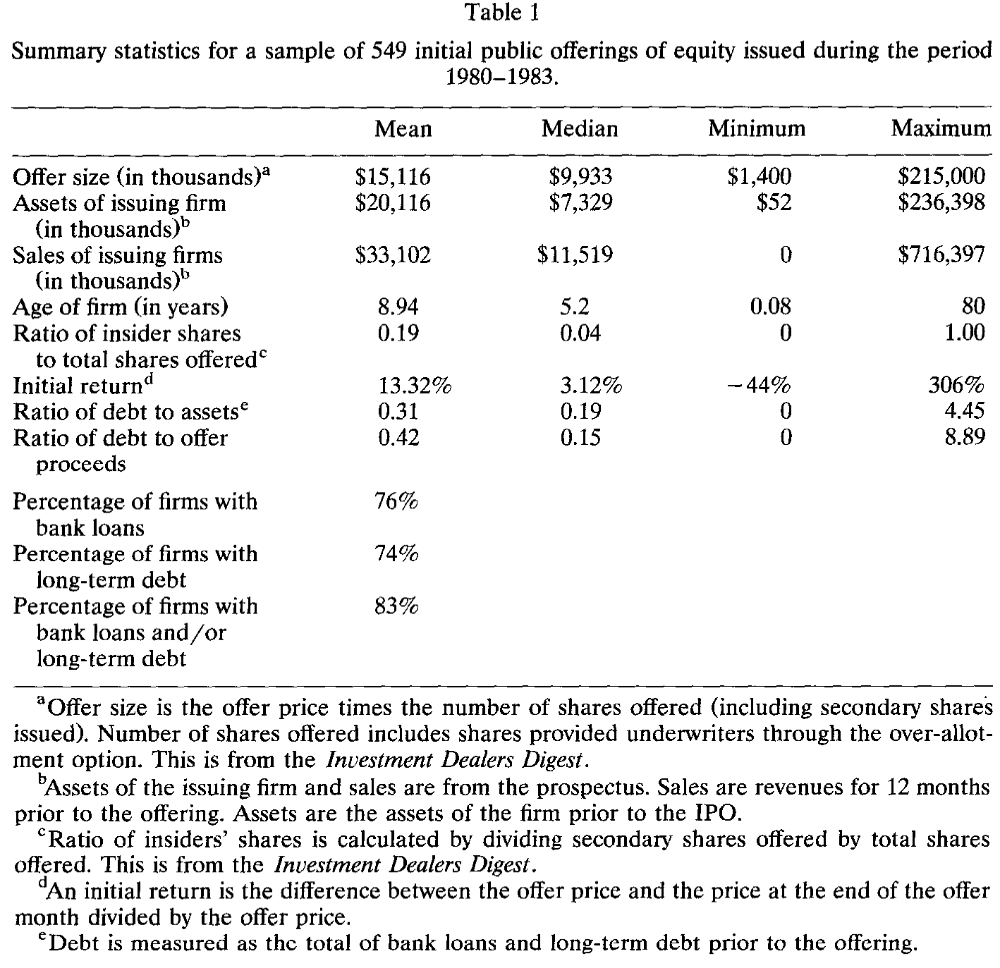
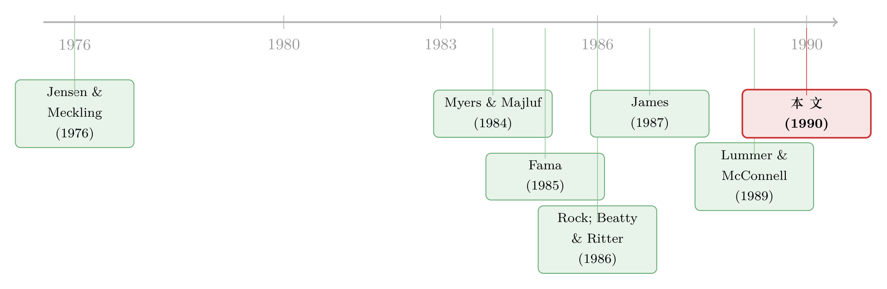

拒绝信里的秘密：一笔没借成的款，如何替新股「定了价」
本文读的是 James & Wier (1990, Journal of Financial Economics)：一家公司在 IPO 之前若已建立起银行借款关系，它的新股折价会显著更轻——样本里有借款关系的 455 家公司平均初始收益只有 9%，而没有任何债务的 94 家公司高达 31%。但作者真正想讲的不是「借款是个好信号」，而是一个更微妙的反转：正因为「被拒绝」会把你出卖，所以高不确定性的公司会理性地选择根本不去申请贷款——借不借这个动作本身，就把公司分了类。
1 一个看似已经被讲烂的故事
先抛一个几乎人人都答得上来的问题：为什么一家公司在第一次公开发行股票（IPO）之前，往往已经先跟银行借了钱？
教科书里的标准答案有两层。一层是「监督」：银行盯着你的账，替所有的债权人和股东省下了代理成本（agency cost）。另一层是「认证」：Campbell and Kracaw (1980) 和 Fama (1985) 都论证过，向中介机构借款，本身就是一个关于公司信用的可信信号——银行肯借给你，说明你不算太差。James (1987) 那篇有名的 What's different about banks? 之后的姊妹研究，也正是从这个方向去理解银行贷款的「独特性」。
听上去这事已经讲透了。借款 → 释放好信号 → 降低信息不对称 → IPO 折价更轻。James 和 Wier 这篇 1990 年的论文，开头给出的相关性也确实漂亮得不像话：

Table 1
接着，一个自然的问题是：如果借款这么好，为什么不是所有公司都抢着在上市前先借一笔？ 既然每家公司都有正的预期价值，理论上它们都能借到「某个金额」的款，那借款关系作为信号的价值不就被稀释殆尽了吗？
这正是简单认证故事的死穴。作者一针见血地指出它的两个漏洞：
第一，银行有撒谎的动机。 如果发行人欠着银行的钱，那么 IPO 募得越多，银行越安全。于是银行天然有把公司价值往高里说的冲动。外部投资者一旦看穿这一点，银行的「背书」就不再可信。指望声誉资本（reputational capital）来约束？可对一家商业银行而言，首次发行证券的小公司只占它生意的极小一块——它的声誉远不像承销商那样、命脉直接系在证券发行上。一个旁证是：作者样本里只有 1% 的借款公司在招股书里写出了贷方的名字（相比之下审计师和投行的名字都是要写的）。
第二，它解释不了「为什么有人不借」。 如果建立借款关系能无成本地降低折价，那所有公司都该去建立，信号也就失效了。
所以真正关键的一步在于：得找到一个机制，既能让借款成为可信的信号，又能解释为什么有些公司理性地选择不去申请。这，才是这篇论文的核心。
2 模型：把「被拒绝」变成一种代价
作者沿用了 Rock (1986) 和 Beatty and Ritter (1986) 的折价逻辑——折价是为了补偿不知情的投资者在「买到高估新股」时的预期损失，从而让他们愿意继续参与市场；而折价的幅度，正比于公司市值的事前不确定性。
在此之上，模型做了一个看似简单、却撬动全局的设定：市场上有两类公司，期望价值完全相同，但市值的离散程度不同。
- L 型（high-dispersion，高离散）公司：市值分布更宽；
- H 型（low-dispersion，低离散）公司：市值分布更窄。
两类公司的可能市值都服从均匀分布：
$$ \tilde{v}_L \sim U[a_L, b_L], \qquad \tilde{v}_H \sim U[a_H, b_H], $$
其中边界满足
$$ a_L \le a_H, \qquad b_L > b_H, $$
两类公司的共同期望市值记为 \(\mu\)。L、H 两型的占比分别是 \(\lambda\) 和 \(1-\lambda\)。公司主人知道自己是哪一型，但不知道真实市值；外部投资者连型都分不出来。
由于折价随事前不确定性递增，如果类型已知，三种发行收入（offer proceeds）会排成这样一条不等式：
$$ OP_L < OP_p < OP_H, $$
这里 \(OP_H\)、\(OP_L\) 是「类型已知」时 H、L 公司各自的发行收入，\(OP_p\) 则是「类型不可分、所有人被混在一起（pooling）」时的统一发行收入。直觉很朴素：不知情的投资者买 L 型股票要承担更大的逆向选择风险，于是要求更大的折价——L 型若被认出来，拿得更少；H 型若被认出来，拿得更多。
接着引入借款这个动作。设贷方在评估时能对借款人做一个无偏估计：
$$ \tilde{e}_j = v_j + \tilde{\eta}_j, \qquad E(\tilde{\eta}_j) = 0. $$
注意这里有个微妙的制度假设（假设 5、6）：贷方虽能估出价值，却无法可信地把这个估计直接告诉市场（因为它有抬高公司价值、好让 IPO 多还债的动机）；而且根据 1927 年的 Glass-Steagall 法案，贷方不能参与 IPO。
现在是全篇的枢纽。作者让借款额 \(D\) 落在一个特定区间：
$$ OP_p < D \le OP_H. $$
这意味着：H 型公司的发行收入足以还清这笔贷款，所以 H 型只要申请就一定借得到；而对 L 型来说，只有当贷方估出的价值高于 \(D\)（即 \(\tilde{e}_L > 0\) 意义上的高位）时才借得到，否则就被拒。
于是，一家想冒充 H 型的 L 公司，它去申请贷款时面对的预期发行收入 \(OP_{LL}\) 就是——
其中 \(F_L(D)\) 是 L 型真实价值低于 \(D\) 的概率，\(OP_{LR}\) 是 L 型「被拒贷之后」的发行收入。
这条式子的玄机在于它的两端各藏着一个不对称：
先看坏的那一半。 如果贷方的决定是公开信息（假设 7，借款会写进招股书，这点合理），那么任何申请被拒的公司，就当场被钉死为低价 L 型——它的发行收入会跌到 \(OP_{LR}\)，比老老实实不借时的 \(OP_L\) 还要难看。L 型独自承担了「被拒绝」的全部代价。
再看好的那一半。 就算 L 型侥幸借到了款，它也只是被混进 H 型里、拿到 \(OP_H\) 而已——可它本该值更多（借到款的 L 型，价值分布在 \([D, b_L]\) 上，而 \(b_L > b_H\)），却拿不到这份「本该更高」的好处。
一边吞下全部的下行风险，一边却分不到全部的上行收益。把两头一加，L 型去申请贷款的预期收入 \(OP_{LL}\)，反而低于它干脆不借、安安静静接受 \(OP_L\) 的情形。于是反转出现了：在 \(OP_p < D \le OP_H\) 这个区间里，L 型公司会理性地选择根本不去申请贷款。
而 H 型呢？只要 L 型不申请，所有申请人就都被识别为 H 型，拿到 \(OP_H > OP_p\)——所以 H 型一定会去借。一个分离均衡（separating equilibrium）就此成立：借款这个动作，自己把两类公司分开了。这也顺带解释了开头那个「为什么不是所有人都借」的难题——不是它们借不到，而是高离散的公司算明白了不去借才划算。
3 当拒绝信被藏起来：信息保密下的均衡
但真正严谨的人会立刻追问：上面整套逻辑，吃饭的本钱是「拒绝决定会被公开」。可现实里，批准了的贷款会写进招股书，被拒的申请却不一定有人报告。事实上作者样本里没有一家公司在招股书里报告过自己被拒。如果拒绝是保密的呢？
这时单纯的信号就崩了。因为若申请贷款无成本、且被拒也没人知道，那么每一家 L 型公司都会想:「反正别的 L 型不会去申请、我被拒也没人看见」——于是它也去申请。结果 L、H 全都去借，分离瓦解。
补救的办法，是给申请贷款加上一个正的成本 \(\phi\)（建立信贷关系本身要花的代价）。这时即便拒绝保密，分离均衡依然可能成立。把 \(D\) 设在 \(OP_p < D \le OP_H\)，分离要求同时满足两个条件:
$$ OP_H - \phi_H > OP_p \tag{4} $$
（H 型觉得借款划算）
$$ F(D)\,OP_{LR} + \{1 - F(D)\}\,OP_H - \phi_L < OP_p \tag{5} $$
（L 型觉得借款不划算）。
把 (4) 和 (5) 合起来看，对一个共同的建信成本 \(\phi\)，能分离两类公司的成本必须落在一个区间里，而这个区间的上下界，取决于三样东西:L 型在总体里的占比 \(\lambda\)、被拒概率 \(F(D)\)、以及 H 与 L 发行收入之差 \(OP_H - OP_L\)。
更妙的是，这个带成本的版本还顺手接纳了「监督」这层旧故事。假设银行的监督能提升公司价值、并且建立信贷关系的成本随公司事前不确定性递增——那么对 H 型（低不确定性、建信成本低）来说，哪怕没有信号收益它也愿意借，它的「信号成本」\(\phi_H\) 趋近于零；而 L 型（高不确定性、建信成本高）则可能干脆放弃。借款决定，照样泄露了类型。这就是为什么作者说自己的模型「能容纳借款的其他收益」，而不是要把监督与认证一脚踢开。
模型最后吐出三条可检验的推论：(1) 有信贷关系的公司，IPO 折价更轻；(2) 关键信息是「有没有被批准过一笔贷款」，所以一纸贷款承诺（loan commitment）就够了，不必真的借满；(3) 由于分离所需的借款额因行业而异，横截面检验里真正重要的是借款关系的「有无」，而非借款的「多少」。
4 数据与证据：9% 对 31%，以及一个「赖不掉」的对手假说
作者拿 1980 年 1 月到 1983 年 12 月间的 IPO 来检验，样本是登在 Investment Dealer's Digest 上的 firm-commitment 发行，剔除带认股权证的发行（没法把权证价值变化和股价效应分开）和金融类公司，最终 549 宗。初始收益用发行价与发行当月月末收盘买价算，全样本均值 13%、中位数 3%，平均发行规模 1500 万美元——这些数字都和 Carter and Manaster (1990)、Ritter (1989) 等人报告的水准吻合。样本里大多数公司发行时手里有某种债务:76% 有银行贷款或贷款承诺，74% 有长期债务。
核心对比已经在开头亮过相:有借款关系的 455 家公司，平均初始收益 9%；没有任何债务的 94 家，平均 31%。差距是三倍多。
但接着，一个诚实的研究者必须自己堵上一个「赖不掉」的对手假说。Myers (1977) 和 Harris and Raviv (1990) 的资本结构理论提醒我们:依赖债务融资的公司，多半是「在手资产（assets in place）」为主；而股权融资的公司，多半握着「成长期权（growth options）」。 成长型公司的事前市值本来就更难估、更不确定，于是折价更深。这样一来，「借款 ↔ 低折价」的相关，可能纯粹是公司资产性质造成的，跟借款传递的信号毫无关系。换句话说，借款也许只是「assets in place」的一个代理变量。这个内生性担忧，作者在文中专门承认并着手处理（关于成长期权如何左右公司的借钱方式，可参见《公司利润越高，债反而越多？》）。
与此同时，Slovin and Young (1990) 几乎同期也在做「银行借款与 IPO 折价」，但他们走的是朴素的认证路线:好公司选择跟银行打交道、于是银行贷款成了可信信号。作者明确指出这条路绕不开前面那两个漏洞——银行的撒谎动机、以及「为什么不是人人都借」——而本文的分离均衡，恰恰是为了补上这两个洞。
5 文献脉络
把这条线索摊开来看，它其实是两股大河的交汇。
一股是金融中介与内部债务的信息论。从 Jensen and Meckling (1976)、Fama and Jensen (1983)、Smith and Warner (1979) 划出「内部 vs. 外部」索取权的分野，到 Myers and Majluf (1984) 点破信息不对称会让经理放弃发股、错过正 NPV 项目，再到 Campbell and Kracaw (1980)、Fama (1985) 论证中介借款能为全体索取权人产生信息——「银行到底特殊在哪」成了一个核心命题。James (1987) 与 Lummer and McConnell (1989) 随后用银行贷款公告的市场反应，给这条线添了实证的砖。

另一股是 IPO 折价的不确定性理论。Rock (1986) 的赢家诅咒、Beatty and Ritter (1986) 的「折价随事前不确定性递增」奠定了基调（关于 Rock 这套逆向选择逻辑，可参见《12% 的「免费午餐」，为什么到你面前就凉了？》）；Carter and Manaster (1990) 则把承销商声誉接了进来。
James 和 Wier 站在两河交汇处，做的事情很「轻」却很「巧」:他们没有发明新的折价机制，而是借来「折价 ∝ 不确定性」这把现成的尺子，再把借款关系塞进去当作一个降低事前不确定性的分类装置。于是中介理论里「银行特殊性」的那个老问题，和 IPO 折价的实证，被一根信号博弈的线缝在了一起。后来关于公司「在银行债、非银行私募债、公募债之间如何取舍」的研究（参见《信用最差的公司，到底去哪儿借钱？》），可以说都是这条缝合线往下生长的枝条。
评论与延伸（Q&A + 研究方向）
(a) 几个可能的疑问
Q：这篇的「信号」和经典的「认证/监督」到底差在哪？
差在信号的内容和方向。认证说的是「银行肯借 → 公司质量好（均值高）」；本文说的是「能借到、且没被拒 → 公司离散度低（方差小）」。前者靠银行的诚实背书，可银行有撒谎动机、背书不可信；后者根本不需要银行说话——它利用的是拒绝这个公开事实，以及 L 型「申请被拒会暴露、申请成功又分不到全部好处」的不对称。所以本文的信号即便在银行不可信的世界里也成立。
Q：既然只要「贷款承诺」就够，那 9% vs 31% 的差距会不会被「真有钱、真投资」这件事污染？
这正是模型推论 (3) 的妙处:它预测重要的是借款关系的有无而非多少，而且承诺（commitment）即可，不必真的动用资金。如果数据里「折价更轻」主要由借款金额驱动，那反而不利于本文、有利于「assets in place」解释。作者的横截面设计就是冲着这个区分去的。
Q：「借款公司多半是 assets-in-place、所以折价天然低」这个对手假说，真被排除干净了吗？
我认为只是被「正视并削弱」，没有被「干净排除」。借款关系与资产性质高度共生，二者在 1980 年代的横截面里很难彻底剥离。作者用了控制变量去逼近，但这本质上仍是相关性证据——没有外生冲击，识别就到此为止。这是全文我最不放心的地方。
Q：为什么作者要假设贷方不能参与 IPO（Glass-Steagall）？这个假设关键吗？
关键，但属于「时代红利」。它保证了贷方不能通过自己下场买股票来变现私有估计，从而锁死了「银行无法可信传递估计」这个前提——而正是这个前提，逼着模型转向「用拒绝来分类」的路子。今天混业经营之后，这个假设松动，机制可能要重写。
Q：拒绝信息到底是公开还是保密，结论会不会翻盘？
不会翻盘，但靠的支柱会换。公开时（第 2 节），分离靠「被拒即暴露」；保密时（第 3 节），分离靠「申请有正成本 \(\phi\)，且成本随不确定性递增」。两条路殊途同归地得到「只有 H 型借款」的分离均衡。作者很老实地承认现实里拒绝多半不公开，所以真正撑住模型的，其实是带成本的那个版本。
Q：9% 这个初始收益，和后来文献里动辄 15%–20% 的折价比起来是不是偏低？
全样本均值 13%、中位数仅 3%，确实偏温和，但这与 1980–1983 这个相对「冷」的发行窗口、以及样本剔除了带权证发行和金融公司有关。和同期 Carter–Manaster、Ritter 的口径是对得上的，不必过度解读跨期差异。
(b) 几个可能的研究问题与提案
1. 用监管冲击给「银行关系 → 折价」做一次外生识别
【经济故事】本文最大的软肋是内生性:借款关系与「资产在手 vs. 成长期权」纠缠不清。若能找到一个外生改变企业获取银行信贷难易的冲击（如跨州银行业放开、关系银行被并购而中断），就能把「关系本身」的因果效应从资产性质里拆出来。 【可行性】中。美国 1980–90 年代的州际银行业放开是成熟的工具（这条识别在银行信贷文献里已被反复使用），可与 IPO 数据库匹配。难点是 IPO 公司多为小公司、关系银行身份在招股书里披露稀疏（本文里只有 1% 写了贷方名），样本会缩水。
2. 把同一逻辑搬到公司债首发与外资持有人
【经济故事】本文讲的是「私募债关系 → 公募股权折价」。一个自然的平移是:首次公开发债（debut bond）时，发行人此前的银行关系是否同样压低了债券的发行折价（underpricing in the corporate bond market）？进一步，若发行人事前有外资银行或外资机构的信贷/持仓关系，这种「跨境认证」对债券一级市场定价的作用是更强还是更弱？ 【可行性】中。债券首发折价可用 TRACE 的首日成交相对发行价来度量；银行关系可从 DealScan 贷款记录回溯。外资持有人维度需要 eMAXX 或国别持仓数据，匹配成本较高，但 doable。
3. 「拒绝信息保密度」作为横截面调节变量
【经济故事】模型的两个版本（公开 vs. 保密拒绝）预测了不同的分离机制。可以利用不同司法辖区或不同年代对「贷款被拒是否需披露」的制度差异，检验:在拒绝更易曝光的环境里，借款关系对折价的压低效应是否更强（公开版机制更活跃）。 【可行性】低到中。难点是「拒绝披露义务」的制度变异既细又难量化，且很少有干净的断点。更现实的做法或许是用披露环境的代理变量（如证券法严格度指数）做粗粒度检验，识别力有限。
4. 借款关系与 IPO 后流动性的联合定价
【经济故事】如果借款关系降低了事前不确定性，那它影响的或许不止首日折价，还有上市后的二级市场流动性与买卖价差——逆向选择越轻，价差越窄。把折价和流动性放进同一个框架，能更彻底地检验「不确定性下降」这一中介变量是否真的在起作用。 【可行性】高。IPO 后日度价差、Amihud 非流动性都易得，借款关系标识可沿用本文口径，是一个增量明确、数据可得的延伸（思路上与《打折卖新股，是为了补偿你将来不好脱手的那份担心》相通）。
我的判断
这篇论文的贡献，不在那张 9% vs 31% 的相关性表，而在它把「为什么有人不借」这个反直觉的事实，变成了模型的核心输出而非漏洞。简单的认证故事解释不了「人人都该借」的悖论，而本文用一个「拒绝即暴露」的不对称，让借款决定内生地完成了分类——借款是可信信号，恰恰因为有人理性地选择不借。这种「用沉默/退出来传递信息」的思路，在后来的公司金融信号文献里反复出现，本文是早期一个干净的范本。
担忧也很清楚，集中在识别:借款关系与资产性质共生，1980 年代的横截面没有外生变异，作者只能用控制变量逼近，因果链条到「相关」为止。此外，整个机制吃 Glass-Steagall「贷方不能下场」这碗饭，混业之后的外部效度存疑。
后续我最想看到的，是有人拿一个真正外生的信贷可得性冲击，把「关系本身」的效应从「资产在手」里干净地切出来——再顺势看看这套逻辑在公司债首发和外资持有人维度上还成不成立。那会是把这篇 35 年前的巧思，真正钉死成因果证据的一步。
参考文献
- Beatty, R., & Ritter, J. (1986). Investment banking, reputation and the underpricing of initial public offerings. Journal of Financial Economics 15, 213–232.
- Campbell, T., & Kracaw, W. (1980). Information production, market signalling and the theory of intermediation. Journal of Finance 35, 863–882.
- Carter, R., & Manaster, S. (1990). Initial public offerings and underwriter reputation. Journal of Finance 45, 1045–1067.
- Fama, E. (1985). What's different about banks? Journal of Monetary Economics 15, 5–29.
- Fama, E., & Jensen, M. (1983). Agency problems and residual claims. Journal of Law and Economics 26, 327–349.
- Harris, M., & Raviv, A. (1990). Capital structure and the informational role of debt. Journal of Finance 45, 321–350.
- James, C. (1987). Some evidence on the uniqueness of bank loans. Journal of Financial Economics 19, 217–235.
- James, C., & Wier, P. (1990). Borrowing relationships, intermediation, and the cost of issuing public securities. Journal of Financial Economics 28, 149–171.
- Jensen, M., & Meckling, W. (1976). Theory of the firm: Managerial behavior, agency costs and ownership structure. Journal of Financial Economics 3, 305–360.
- Lummer, S., & McConnell, J. (1989). Further evidence on the bank lending process and the capital market response to bank loan agreements. Journal of Financial Economics 25, 99–122.
- Myers, S. (1977). Determinants of corporate borrowing. Journal of Financial Economics 5, 147–175.
- Myers, S., & Majluf, N. (1984). Corporate financing and investment decisions when firms have information that investors do not have. Journal of Financial Economics 13, 187–221.
- Rock, K. (1986). Why new issues are underpriced. Journal of Financial Economics 15, 187–212.
- Slovin, M., & Young, J. (1990). Bank lending and initial public offerings. Journal of Banking and Finance, forthcoming.
- Smith, C., & Warner, J. (1979). On financial contracting: An analysis of bond covenants. Journal of Financial Economics 7, 117–161.